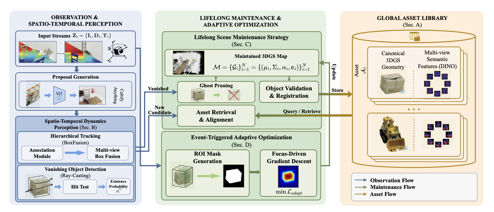

About Me
I am a first-year master's student in Control Science and Engineering at the School of Automation, Beijing Institute of Technology. I work on robot perception and mapping, with a current focus on visual 3DGS-SLAM, scene reconstruction, and lifelong scene maintenance in dynamic environments.
My broader interests include robot localization and navigation, embodied perception for service robots, and autonomous systems that combine robust scene understanding with efficient deployment in real-world environments.
Research Interests
- Visual 3DGS-SLAM: 3D Gaussian Splatting based mapping, localization, and online scene representation for robots.
- Lifelong Scene Maintenance: Real-time scene updating, object-centric map maintenance, and robust operation in dynamic environments.
- Embodied Perception: Spatial perception pipelines for service robots, autonomous navigation, and downstream interaction tasks.
- Robot Autonomy: Perception-driven planning and system integration for mobile robots and autonomous platforms.
Publications

CubifyGS: Object-Centric 3D Gaussian Splatting for Lifelong Dynamic Scene Maintenance
Bohan Ren, Dianyi Yang, Shiyang Liu, Yu Gao, Jiadong Tang, Zhilin Lai, Yi Yang*, Mengyin Fu
IROS 2026 (Accepted)
Abstract
CubifyGS is an object-centric mapping framework for lifelong scene maintenance in dynamic environments with frequent rigid object rearrangement. Instead of relying on slow primitive-level re-optimization that often leaves persistent ghosting artifacts, it updates 3D Gaussian assets through spatio-temporal dynamics perception, global asset retrieval, rigid transformation, and explicit pruning. An event-triggered adaptive optimization strategy then refines only the affected regions, improving both artifact suppression and long-term maintenance efficiency on a newly constructed high-fidelity dynamic benchmark.

OpenGS-Fusion: Open-Vocabulary Dense Mapping with Hybrid 3D Gaussian Splatting for Refined Object-Level Understanding
Dianyi Yang, Xihan Wang, Yu Gao, Liu shiyang, Bohan Ren, Yufeng Yue, Yi Yang*
IROS 2025
Abstract
OpenGS-Fusion is an open-vocabulary dense mapping framework that couples 3D Gaussian Splatting with a TSDF representation for on-the-fly, lossless semantic fusion. It further introduces MLLM-Assisted Adaptive Thresholding to refine 3D object segmentation under open-ended language queries, substantially improving object-level understanding and delivering stronger scene reconstruction and language-guided interaction performance than prior methods.

Automated 3D-GS Registration and Fusion Via Skeleton Alignment and Gaussian-Adaptive Features
Liu shiyang, Dianyi Yang, Yu Gao, Bohan Ren, Yi Yang*, Mengyin Fu
IROS 2025
Abstract
This work presents an automated framework for 3D Gaussian Splatting sub-map registration and fusion without manual reference-map selection. By combining cross-scene geometric skeleton extraction with ellipsoid-aware convolution and a multi-factor Gaussian fusion strategy, it improves both alignment accuracy and post-fusion rendering quality, delivering more reliable 3D scene representation for robotic perception and autonomous navigation.

RoadsideSplat: Robust 3D Gaussian Reconstruction from Monocular Roadside Surveillance
Zhaoxiang Liang, Wenjun Guo, Bohan Ren, Yi Yang*
IROS 2025

Transferring Prior Thermal Knowledge for Snowy Urban Scene Semantic Segmentation
Xiaodong Guo, Tong Liu, Yefeng Mou, Siyuan Chai, Bohan Ren, Yijin Wang
IEEE TITS
Abstract
This work targets RGB-thermal semantic segmentation in snowy urban scenes by addressing both the lack of training data and practical deployment constraints. It introduces the SUS dataset and a knowledge-distillation framework built around MCNet, where prior thermal knowledge from an RGB-T teacher is transferred to an efficient RGB student, leading to stronger segmentation performance than existing methods on both SUS and MFNet.

Research on the Implementation of a 3D-GS-Based Depth Visual SLAM Method Using RGB-D Camera
Bohan Ren
Undergraduate Thesis
Robotics & Vision Work

Tencent Games Algorithm Competition 2025 (TGAC2025) - 3D Video MoCap Track
Date: January 2026
Description: TGAC2025 is a university-level algorithm competition with a 3D Video MoCap track focused on recovering human motion from video. The task is closely related to 3D vision, pose estimation, motion reconstruction, and embodied perception.
Award: 7th place in the "3D Video MoCap" track; RMB 6,000 prize.

A2RL: Autonomous Racing Robotics Competition
Date: November 2025
Description: A2RL is an international autonomous vehicle competition in Abu Dhabi focused on perception, mapping, planning, calibration, and high-speed autonomous driving systems. University and technology teams develop full-stack autonomy software for real race-car platforms.
My Work: One of the main software engineers, global track mapping based on factor graph, global optimal trajectory design and optimization, and sensor calibration.
Award: Silver Group runner-up (2nd place) at the Grand Prix on November 15, 2025. Watch video

iDepthMIDI: A Depth-Sensing Gesture Interface Based on iPhone TrueDepth Camera
Date: February 2024
Description: iDepthMIDI explores short-range depth perception and gesture interaction using the iPhone TrueDepth camera. It combines hand gesture detection with depth measurement to build a contactless control interface, with MIDI control as one application scenario.
My Work: Depth-sensing interaction design, gesture-control pipeline, and software development.